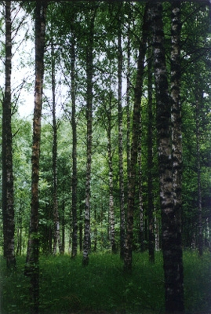

Derrida talks about interacting in a virtual environment.
"3">
the airport text
Wanting to know where one is and how to navigate seems to be part of human nature. Even though the navigational structures havechanged with technological alterations,the model of navigation used by the traditional MUSH is that of the mediaeval traveler- moving through spacesarranged along the cardinal points. From the networked perspective, such a worldview can seem archaic.

MUSHes allow users to interact in a virtual "environment." The transparency of that architectual environment is often assumed. Post-structural analysis suggests that all experiences are mediated, but the transparency of the MUSH mode of interaction is not because the user is unaware of the mediated nature of the text but because the text is not aware of itself. This reading constrains the buildingof networked communities to that which can be fit into a Cartesian cosmography.The ontology of the networked environment has a complexity and flexibilitythat is not utilized by a transparent treatment.
the forest text
Using the internet to create communities, because of its novelty, is worthy of study and exploration. Whether it matters if this creation of communitytakes place in an envisioned "natural" landscape or in a multidimentional hyper-environment is still to be answered.
the T.V. text
HabiTEXT is not a space designed as a forum for the users to engage in intellectual discussion but a habitable critical discourse.
Our attempt is an environment where transparency is transposed with textual autospectation, purpose with play and hierarchy with anarchy.